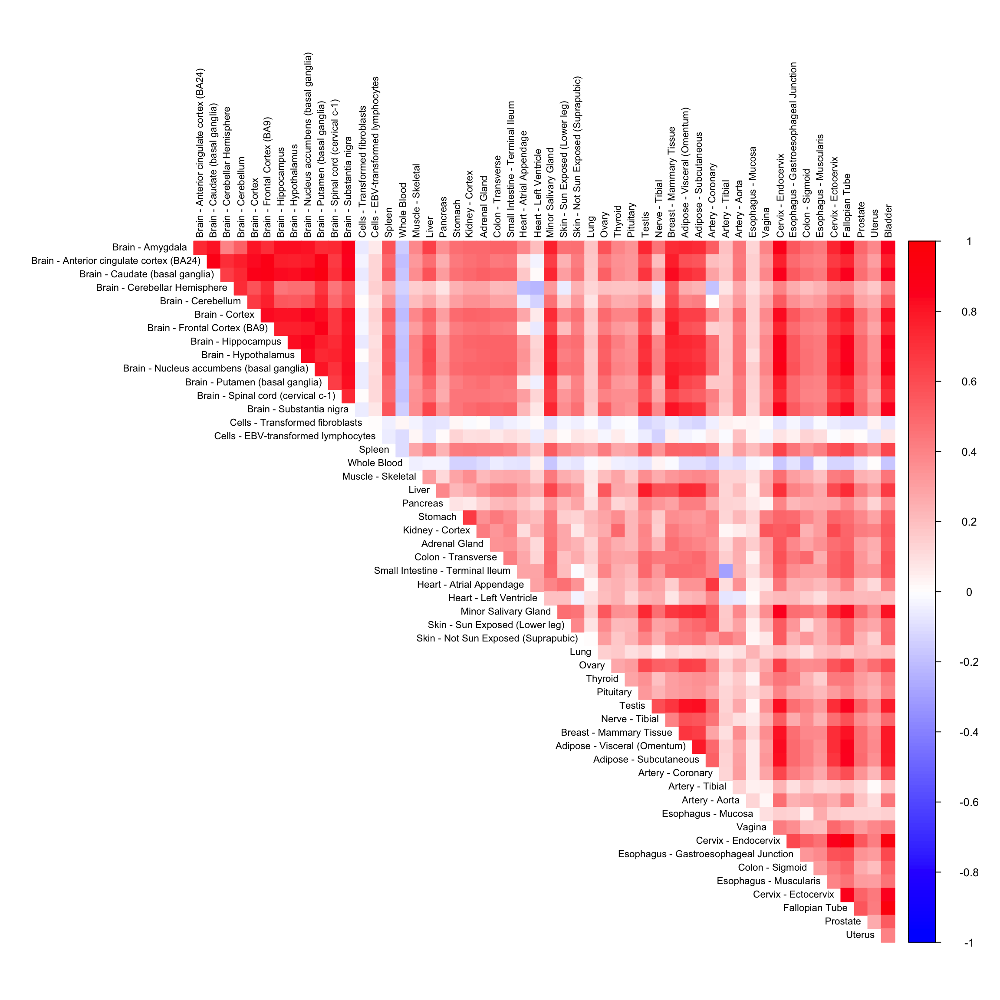
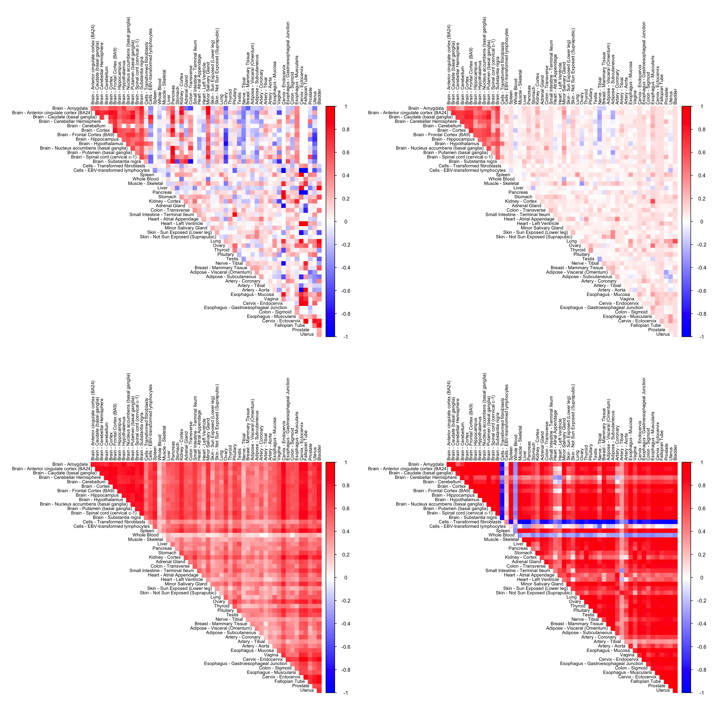

In this script, we compare the performance of CorShrink on missing data matrix with imputed data from different imputation methods.
library(ggplot2)
library(corrplot)## corrplot 0.84 loadedlibrary(gridExtra)
library(flashr)
library(softImpute)## Loading required package: Matrix## Loaded softImpute 1.4library(CorShrink)name <- "ENSG00000166819"impute_method <- "svd"data("sample_by_feature_data")matc=biScale(sample_by_feature_data,col.scale=FALSE,row.scale=FALSE,trace=TRUE)## Iter 1 Total Changes 848.8924
## Iter 2 Total Changes 3.061265
## Iter 3 Total Changes 0.4982495
## Iter 4 Total Changes 0.08744789
## Iter 5 Total Changes 0.01532607
## Iter 6 Total Changes 0.002686277
## Iter 7 Total Changes 0.0004709748
## Iter 8 Total Changes 8.258779e-05
## Iter 9 Total Changes 1.448321e-05
## Iter 10 Total Changes 2.539952e-06
## Iter 11 Total Changes 4.454417e-07
## Iter 12 Total Changes 7.81192e-08
## Iter 13 Total Changes 1.370015e-08
## Iter 14 Total Changes 2.402663e-09
## Iter 15 Total Changes 4.21367e-10fits3=softImpute(matc,rank.max=50,lambda=1,type=impute_method)
fitted_mat <- complete(sample_by_feature_data,fits3,unscale=TRUE)cor_mat <- cor(fitted_mat)data("pairwise_corr_matrix")corshrink_mat <- CorShrinkData(sample_by_feature_data, image = "null",
ash.control = list(mixcompdist = "halfuniform",
control= list(maxiter=1000)))gene_names <- as.character(read.table(file = "../shared_output/GTEX_V6/gene_names_GTEX_V6.txt")[,1])
gene_names_1 <- as.character(sapply(gene_names, function(x) return(strsplit(x, "[.]")[[1]][1])))
person_label=read.table("../shared_output/GTEX_V6/person_identifier_labels_with_numbers.txt");
samples_id <- read.table(file = "../shared_output/GTEX_V6/samples_id.txt")[,1]
samples_person <- sapply(samples_id, function(x) return(paste0(strsplit(as.character(x), "-")[[1]][1:2], collapse ="-")))
tissue_labels <- read.table(file = "../shared_output/GTEX_V6/samples_id.txt")[,3]
unique_persons <- unique(samples_person)
unique_tissues <- unique(tissue_labels)flash_out <- get(load("../shared_output/flash_output.rda"))
yfill = flash_fill(sample_by_feature_data,flash_out)
yfill.cor = cor(yfill)
col2 <- c("blue", "white", "red")
corrplot::corrplot(yfill.cor[order_index, order_index],
diag = FALSE,
col = colorRampPalette(col2)(200),
tl.pos = "td", tl.cex = 0.7, tl.col = "black",
rect.col = "white",na.label.col = "white",
method = "color", type = "upper")
new_data <- flash_out$EL %*% t(flash_out$EF)
cor_new_data <- cor(new_data)
rownames(cor_new_data) <- colnames(sample_by_feature_data)
colnames(cor_new_data) <- colnames(sample_by_feature_data)par(mfrow=c(2,2))
corrplot(as.matrix(pairwise_corr_matrix)[order_index, order_index],
diag = FALSE,
col = colorRampPalette(col2)(200),
tl.pos = "td", tl.cex = 0.7, tl.col = "black",
rect.col = "white",na.label.col = "white",
method = "color", type = "upper")
corrplot(as.matrix(corshrink_mat$cor)[order_index, order_index],
diag = FALSE,
col = colorRampPalette(col2)(200),
tl.pos = "td", tl.cex = 0.7, tl.col = "black",
rect.col = "white",na.label.col = "white",
method = "color", type = "upper")
corrplot(as.matrix(cor_mat)[order_index, order_index],
diag = FALSE,
col = colorRampPalette(col2)(200),
tl.pos = "td", tl.cex = 0.7, tl.col = "black",
rect.col = "white",na.label.col = "white",
method = "color", type = "upper")
corrplot(as.matrix(cor_new_data)[order_index, order_index],
diag = FALSE,
col = colorRampPalette(col2)(200),
tl.pos = "td", tl.cex = 0.7, tl.col = "black",
rect.col = "white",na.label.col = "white",
method = "color", type = "upper")
This R Markdown site was created with workflowr